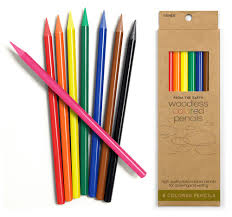
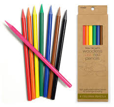

To Order
This catalog only display the product we currently have in stock. To purchase or rent a product, please contact 0812341234. You can either order the products as 'normal' or 'premium' with a little extra charge. Premium customers will recieve the product in a secure box, along with a surprise weekly drink.
Broken Pencils
These pencils are from mean previous users. They are still usable, but in a bad shape. We do not want to waste any of the Earth's precious resources so we are offering you a chance to be conservative by sacrificing your comfortability in writing.
- Never out of stock
- Cheap alternative
- For chewing
- 50 satang

Standard HB Pencil
We do acknowledge that there is a feud between the HB pencil users and 2B pencil users for writing. This website does not choose sides and therefore provide both standard Staedler HB and 2B pencils.
- Polished of luster
- Simplistic design
- Modern hexagonal grip
- 3 baht

Standard 2B Pencil
We do acknowledge that there is a feud between the HB pencil users and 2B pencil users for writing. This website does not choose sides and therefore provide both standard Staedler HB and 2B pencils.
- Polished of luster
- Simplistic design
- Modern hexagonal grip
- 3 baht

Drawing Set
This set is for customers who seek good quality products with a low price for drawing. We have included both the grey scale pencils and color pencils in the set.
- Polished of luster
- Simplistic design
- Staedler grey scale drawing pencils
- Woodless color pencils
- Modern hexagonal grip
- 80 baht
 
